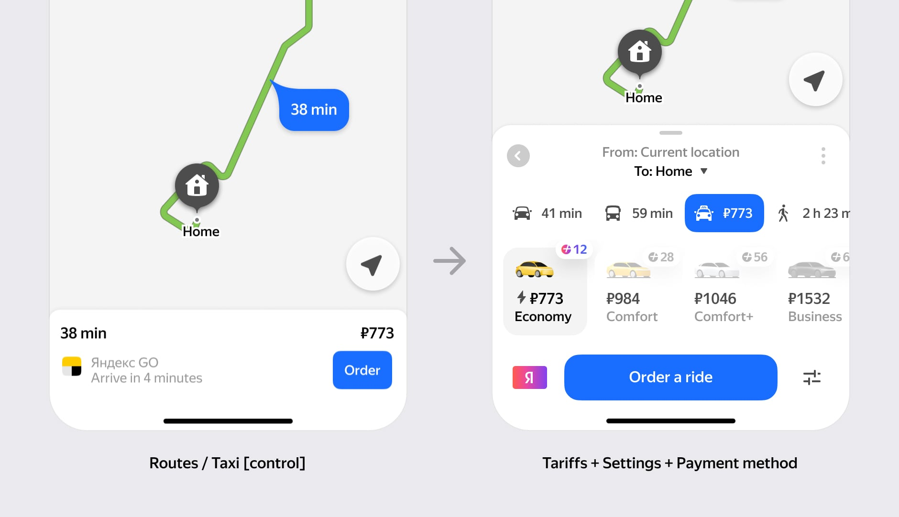
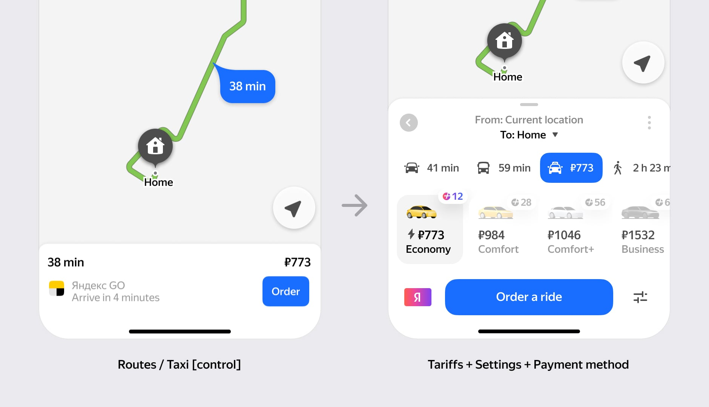
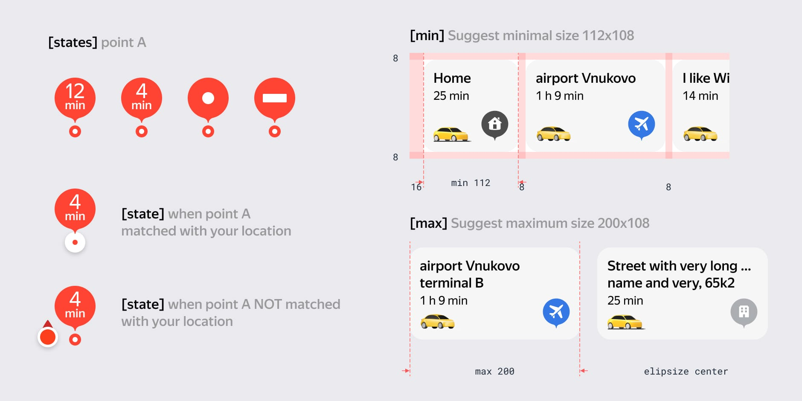
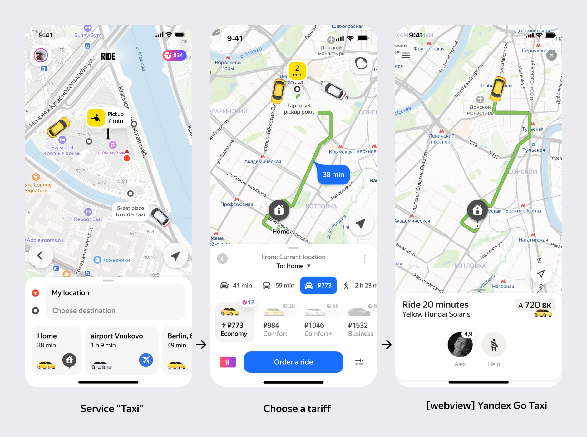

Maps help users navigate from point A to B, and taxi services are a natural extension of this utility ✦ We aimed to enhance user engagement and expand transactional opportunities by integrating taxi ordering into Yandex Maps, creating a seamless experience within the app ✦
metrics. you can't fix what you can't measure. we will work with taxi orders, newcomers, user retention, and conversation rate.
↓ research. below is illustrating how users place taxi orders within our app

... it seems that ordering a taxi is not easy

↓ research. let's ask people

result. many people don't know they can order a taxi in Maps. they search for places and build a route here, then open the taxi app
↓ experiment. ok, let's add a taxi order button to the relevant scenarios (search / transit / routes)
↓ experiment. we will show a taxi alternative for all types of routes
car routes ↓
public transport routes ↓

taxi orders are growing! ↗


problem. click-outs convert to orders significantly worse than orders made within the app ✦
what if we keep our users inside our app? but how? maybe fullscreen webview!
↓ process. we need tariffs
 

↓ process. also payment methods

of course, settings. done ⤷

↓ process. and the order status

we'll use them for all transactions in our product

↓ process. what about my orders history? done ⤷

↓ process. our orders are growing ↑ but you do not seriously grow anything without an entry point on the main screen ✦
↓ process. pick up time and other features like in other taxi apps
→ result. we have significantly increased taxi orders, and they continue to grow. we are the top choice for new user acquisition, and millions of people use our service
